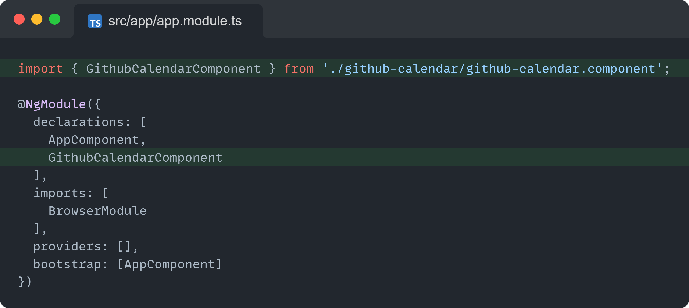
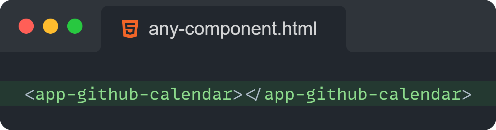
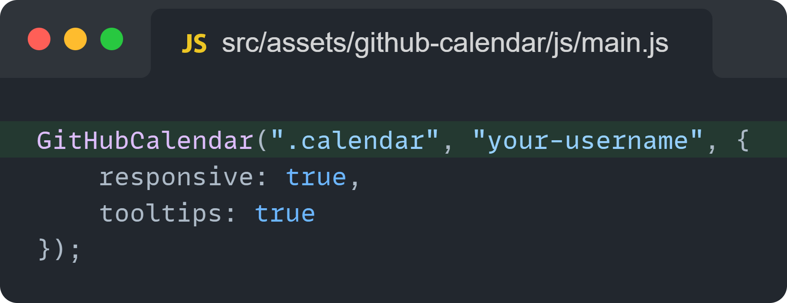

GitHub contributions calendar as an Angular Component!
Usage guide:
Now that you have successfully run this project let me help you add this component into your Angular project! 🎉
Step 1
Copy paste the github-calendar component from /src/github-calendar folder to the /src/app directory of your project
Step 2
Copy paste the github-calendar asset from /src/assets/github-calendar folder to the default /src/assets directory of your project
Step 3
Add GithubCalendarComponent to declarations into app.module.ts

Step 4
Add <app-github-calendar> component tag in any component you want!

Step 5
To display the stats of any user you want, add their username in the main.js file
